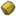

エオルゼア時計。
Version.2
Version.5 エオルゼア時間
|
・
|
|
|
・
[日] |
|
| ・ [時] |
|
| check | 守護月 | ドロップ率 | 属性 | 名称 | 場所 |
|---|---|---|---|---|---|
| 1月 | ％ |  氷属性 氷属性 | 磨羯のアートマ | 東部森林 | |
| 2月 | ％ | 氷属性 | 宝瓶のアートマ | 高地ラノシア | |
| 3月 | ％ |  水属性 水属性 | 双魚のアートマ | 低地ラノシア | |
| 4月 | ％ | 水属性 | 白羊のアートマ | 中央ラノシア | |
| 5月 | ％ |  風属性 風属性 | 金牛のアートマ | 東ザナラーン | |
| 6月 | ％ | 風属性 | 双子のアートマ | 西ザナラーン | |
| 7月 | ％ | 雷属性 | 巨蟹のアートマ | 西ラノシア | |
| 8月 | ％ | 雷属性 | 獅子のアートマ | 外地ラノシア | |
| 9月 | ％ | 火属性 | 処女のアートマ | 中央森林 | |
| 10月 | ％ | 火属性 | 天秤のアートマ | 中央ザナラーン | |
| 11月 | ％ |  土属性 | 天蠍のアートマ | 南ザナラーン | |
| 12月 | ％ | 土属性 | 人馬のアートマ | 北部森林 |
※ 属性月はドロップ率に寄与しない仕様で動作中